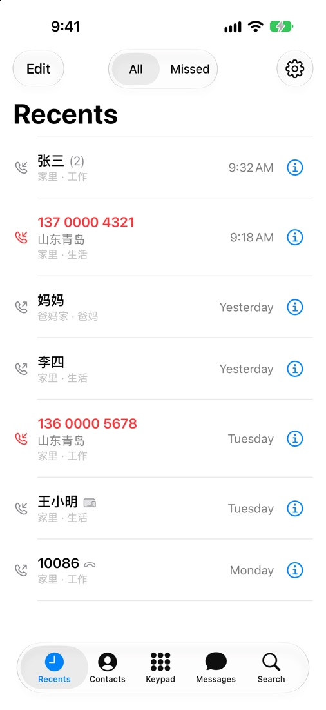
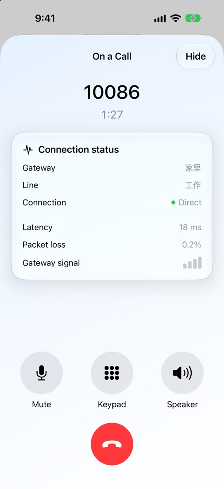
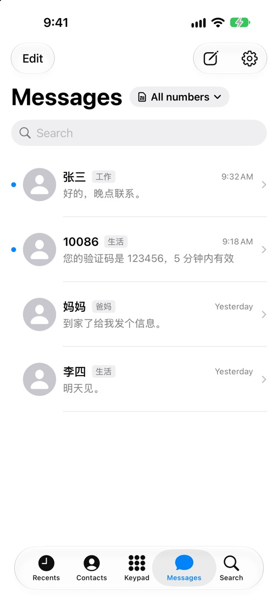
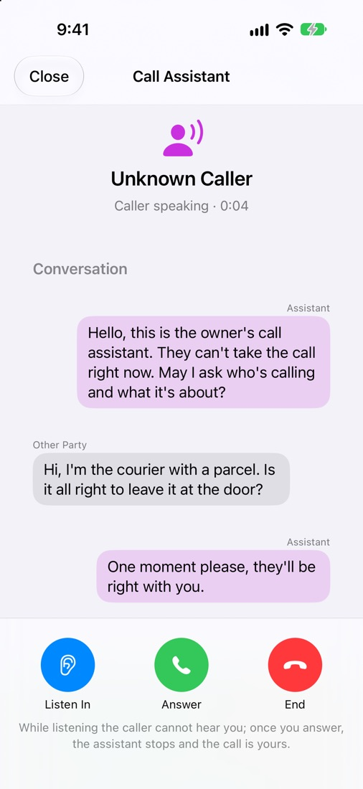
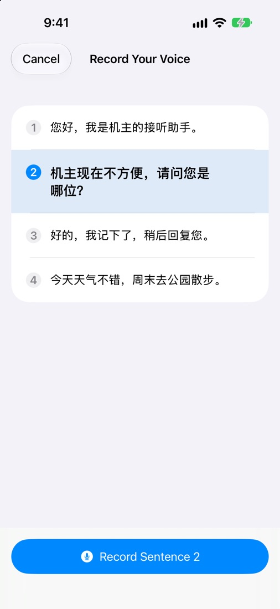
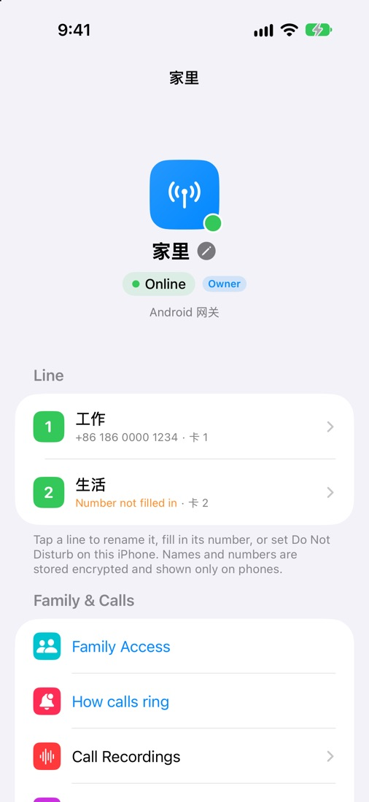

In beta · iOS 17 or later
As if the SIM were in your iPhone.
SimNest's Phone and Messages are built to feel like the iPhone's own: calls ring on the lock screen and land in Recents, texts arrive like any other. The only difference is that the SIM is at home.
Invite-only TestFlight beta, not yet on the App Store. Numbers, contacts and texts in the screenshots are demo data.


Calls
Your iPhone rings as usual, even when locked. Calls are saved to the system's Recents; tap one to call back on the same number.
- Every call is labelled with its line: Work, Personal, Parents. Tell them apart at a glance.
- See whether a call is going direct or through a relay, and its delay.
- Keypad, key tones, mute, speaker and Bluetooth work as you'd expect.
- Unknown numbers show where they're from, looked up on the phone itself.
Messages
Close to the iPhone's own Messages. See every line's texts together, or just one line.
- Verification codes spotted and copied in one tap.
- Load older texts from the gateway phone by date.
- If the gateway is offline, texts wait as drafts and can send once it's back.
- Encrypted on the gateway, opened only on your iPhone.

Call assistant
Let the assistant pick up numbers you don't know. It greets the caller in your own voice, and what they say appears as text on your iPhone as they say it.
- Listen in, tap a ready-made reply, or take over at any moment.
- Read four sentences aloud and the gateway can speak in your voice.
- Turn it on per line, and choose whether it waits a few rings first.
- Voice and transcript are made on the gateway phone at home, never on a server.


Gateway and family
Whether the gateway at home is online, what each SIM is called, who can answer which line: all on one page.
- Name each SIM; names and numbers are encrypted and shown only on phones.
- Invite family by link or QR code, with answer, call, read and send rights set per line.
- Ringing: everyone at once, the owner first, or a chosen person first.
- Call recording, the call assistant and your own relay are set up here too.

And also
A few more steps of thought for "I'm out, the SIM is home".
Pre-trip check
One look before you leave: gateway, SIM, network, direct paths, relay and battery.
Offline alerts
Told if the gateway is offline for over a minute, and again when it's back.
Widgets
Gateway status, line cards, recents, favourites, pre-trip check and the call assistant.
New phone, no fuss
The old phone approves the new one; lost it? A recovery code or encrypted backup brings it back.
Getting started
- Install the gateway on the Android phone at home with the SIM.
- Once you have a TestFlight invitation, install SimNest on your iPhone.
- Open SimNest and scan the QR code on the gateway's screen. That iPhone becomes the owner.
The iPhone app is invite-only for now; we'll say so here when it opens up. It needs iOS 17 or later.